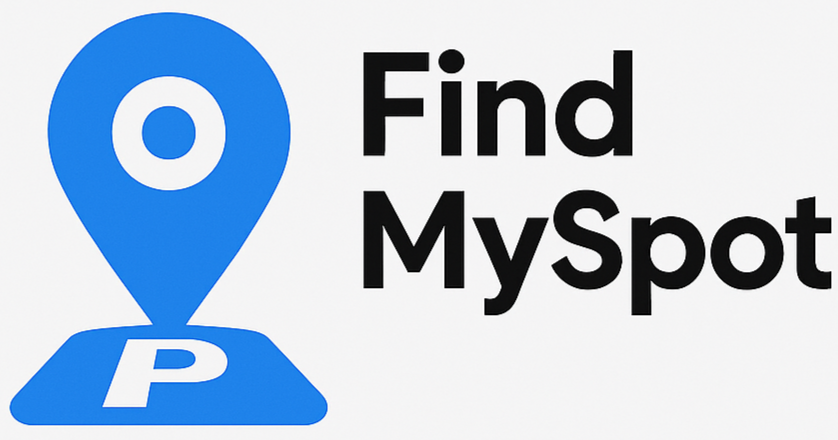

Project Overview
FindMySpot ist eine Daten-getriebene Webanwendung, die Autofahrern in Winterthur hilft, schnell die passende Parkmöglichkeit zu finden. Statt einer einfachen Karte bietet die App ein intelligentes Dashboard mit Such-, Filter- und Statistik-Funktionen.
Key Features
- Smart Search: Findet Parkplätze via Name oder Straßensuche.
- Radius-Filter: Slider für Umkreissuche (100m bis 5km) um einen gewählten Punkt.
- Data Safety: Konservatives 24/7-Labeling – wir zeigen "24h geöffnet" nur an, wenn die Daten es 100% bestätigen.
- Analytics: Live-Statistik der verfügbaren Parkplätze im Dashboard.

Technical Architecture
Das Backend basiert auf Flask (Python) und einer MongoDB-Datenbank, die regelmäßig mit OpenStreetMap-Daten synchronisiert wird. Die Architektur umfasst zudem eine REST-API für die Kommunikation zwischen Frontend und Datenbank sowie ein Admin-Dashboard zur Verwaltung.
